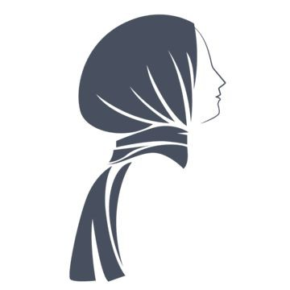
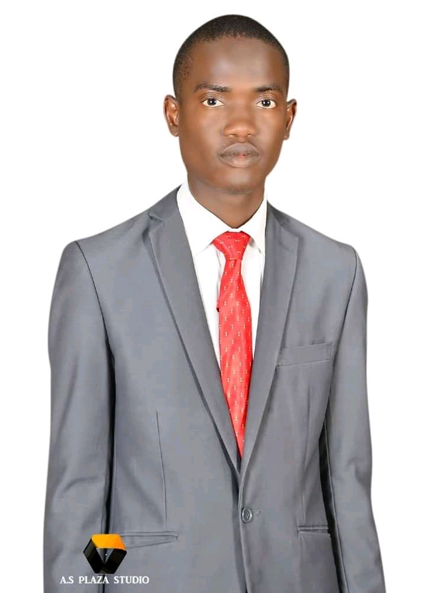
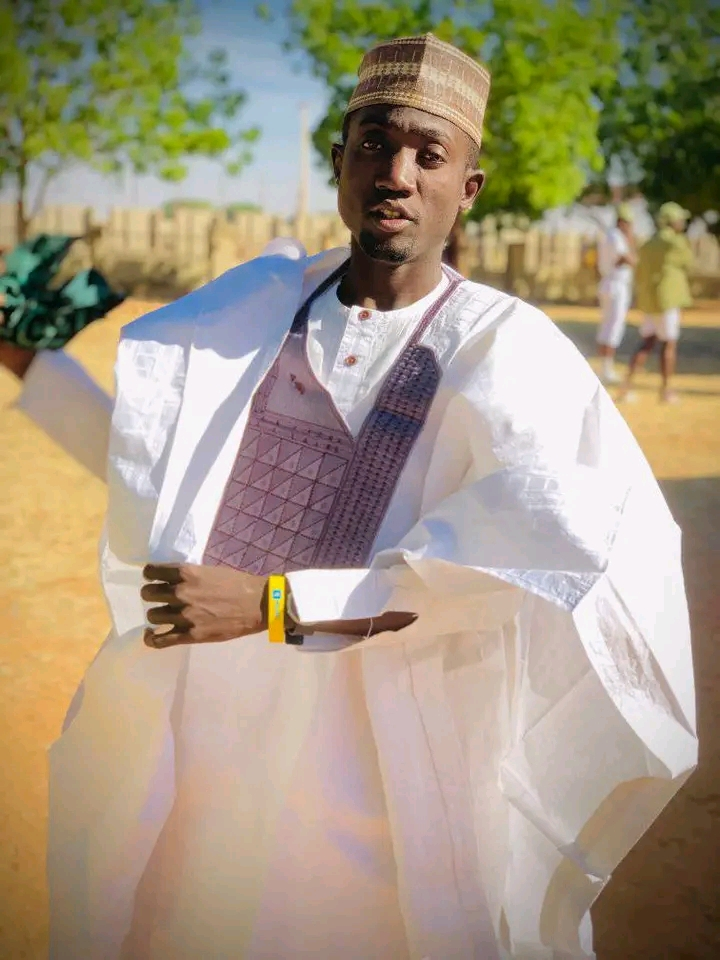
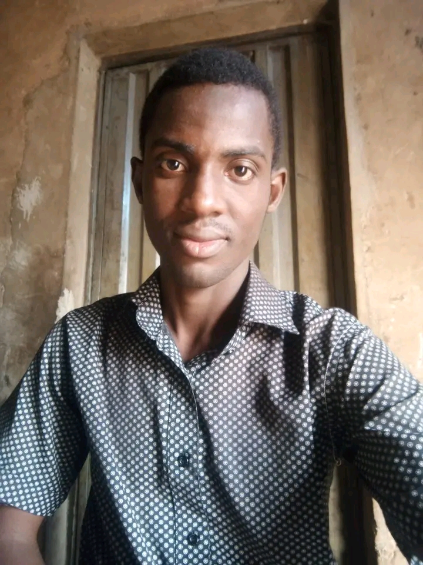
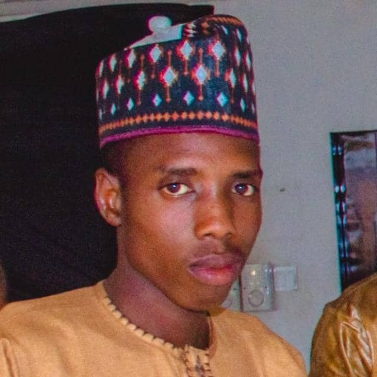
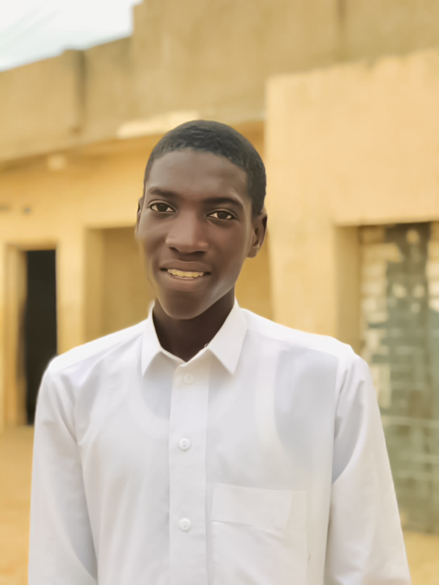
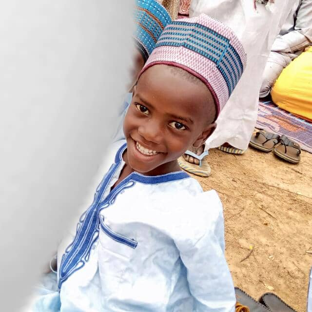
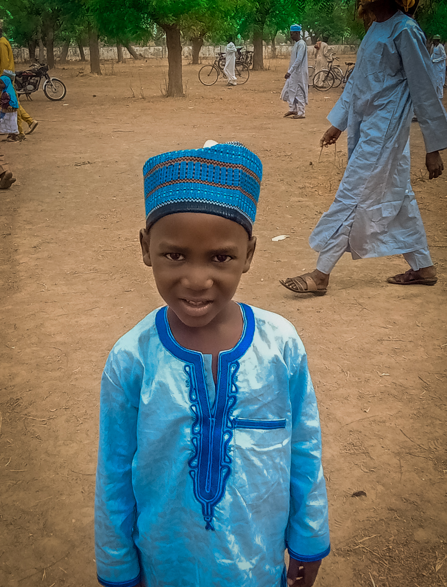
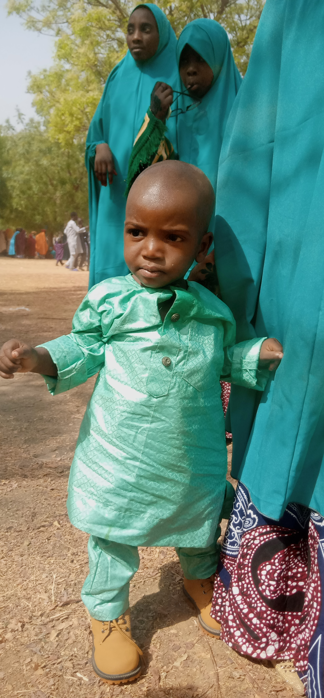

Family

MURJA LAWAN ADAM
She is the first born in the home. She graduated from secondry school in 2003

DR. ABUBAKAR LAWAN
He is our big brother and mentor. he is graduated of MBBS from USAMAN DANFODIO UNIVERSITY, SOKOTO in 2016
HAJARA LAWAN
She is the third born in home and she graduated from GGSS Madobi in 2008 then she went to school of hygiene, kano and graduated in 2011

ABDULRAHMAN LAWAN IBRAHIM
He is only one that playing football in our home. he is graduated in political science from USAMAN DANFODIO UNIVERSITY, SOKOTO in 2021
SAFFIYYA LAWAN IBRAHIM
She graduated from secondry school in 2013 and also graduated in CHEW from college of health science and technology, bebeji in 2019

ARC. SAIFULLAHI MUHD LAWAN
He graduated from federal science college, sokoto in 2015 and he went to ALIKO DANGOTE UNIVERSITY OF SCIENCE AND TECHNOLOGY, WULID and graduated in architecture in 2019
MARYAM LAWAN ADAM
She graduated from secondry school in 2016 and now she is final year student of food science and technology in ALIKO DANGOTE UNIVERSITY OF SCIENCE AND TECHNOLOGY, WUDIL

IBRAHIM LAWAN IBRAHIM
He graduated from federal science college, sokoto in 2019 and now he is student of bulding technology in ALIKO DANGOTE UNIVERSITY OF SCIENCE AND TECHNOLOGY, WUDIL
HAFSAT LAWAN IBRAHIM
She graduated from secondry school in 2021 and now she is student of education Chemisty in ALIKO DANGOTE UNIVERSITY OF SCIENCE AND TECHNOLOGY, WUDIL

KAMAL LAWAN
KLAWAN He graduated his secondry school in 2020 and now he is student of software engineering in FEDERAL UNIVERSITY OF TECHNOLOGY, BABURA JIGAWA STATE
FATIMA LAWAN IBRAHIM
Bintu She graduated his secondry from FIRST LADY SCIENCE COLLEGE, KANO in 2022
AISHA LAWAN IBRAHIM
Humaira she is in secondrY school student at ABBA ACADEMY NURSERY PRIMARY AND SECONDRY SCHOOL
SAFFIYYA ISAH UZAIRU
Iman She is lovely granddaughter in our home, now she is in primary school at ABBA ACADEMY NURSERY PRIMARY AND SECONDRY SCHOOL

ADAM LAWAN
Ahaji he was born in 2014 and now he was in primary school at ASAS SCHOOL

UMAR LAWAN
Faruq he was born on 3 jan. 2016. and now he was in primary school at ASAS SCHOOL

ALIYU LAWAN IBRAHIM
Baba Ali he was born in 4 jan. 2021 and he is the last born in our home. our father died a year after he his born